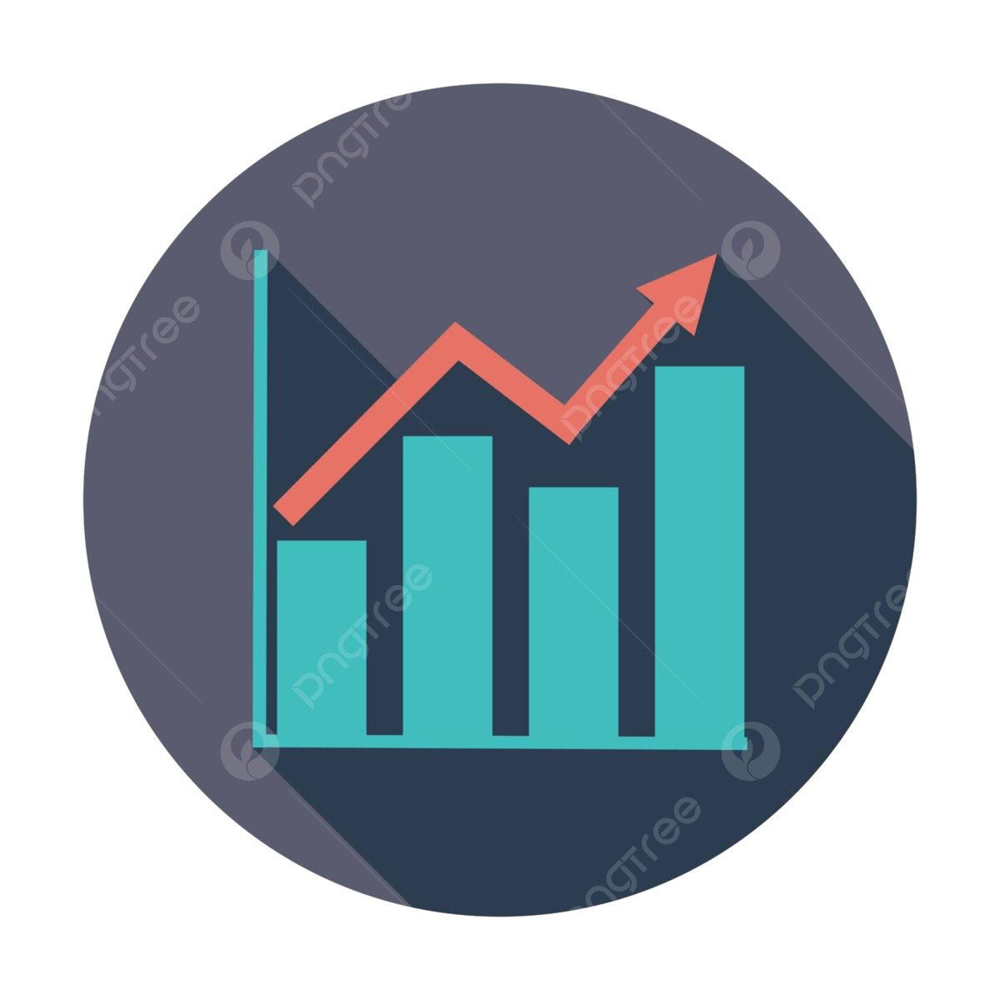

Welcome!
Use the navigation bar on the top to explore my portfolio. Each section contains examples of my work and the code used to create them. Anytime you see a “show” button, feel free to click on it to see my code.
This portfolio is a showcase of my work quality, standards, and the passion I bring to every project.
What You Can Find Here:
-  Statistical Analysis: Reports with applied statistics to solve real-world problems and practice projects to enhance my analytical skills.
- Visualizations: User-focused, insight-driven visualizations I’ve created over the years. Click on the Visualizations tab to see examples of my work.
- Data Wrangling: I have extensive experience working with big data in both private and public projects. You can see similar work throughout my portfolio.
- Dashboard Design: Most of my professional dashboards can’t be shared publicly, but this portfolio demonstrates my skills in user-focused design.
I hope you enjoy going through my portfolio! Thank you for taking the time to get to know me a little better :)

My Resume
Explore my resume to learn more about my professional journey, experience, and skills.
About Me
Who Am I?
Professionally:
Statistician Data Analyst Data Scientist
Personally:
- Family: 3 years of being a proud husband, and now proud dad
-
 Origin: Originally from Mexico
Origin: Originally from Mexico
- Languages: English, Spanish, moderate Haitian Creole
-
 Culture: Been to 12 countries, I got used to sharing with
different cultures. Lived in 3 of them for over a year. Even at my
hometown there are > 100 unique indigenous groups.
Culture: Been to 12 countries, I got used to sharing with
different cultures. Lived in 3 of them for over a year. Even at my
hometown there are > 100 unique indigenous groups.
-
 Missionary: Served as a missionary teaching the gospel in
Chile
Missionary: Served as a missionary teaching the gospel in
Chile
In my free time, I love learning about the universe’s mysteries—higher dimensions, quantum mechanics, black holes, and other scientific wonders. My wife may be getting tired of me talking about it all day haha. I’m always curious! I also enjoy spending time with my family at home and outdoors.

Hire Me
Here i’d put my linkedin profile with a link, my email, and my phone number in a way that highlights them.